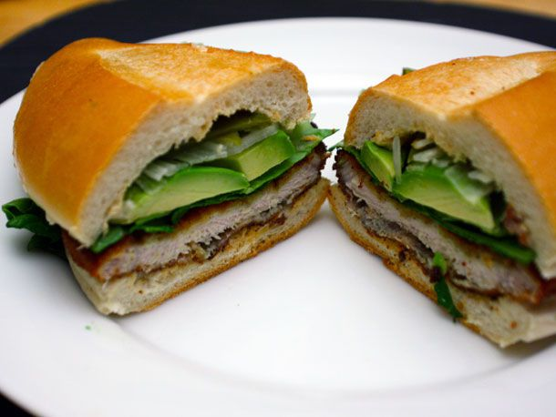

Torta de Milanesa

Description
Another mexican street food banger
Ingredients
- 1 1/2 pound thin-cut sirloin or round steak
- 1/2 teaspoon
- 1/2 teaspoon black pepper
- 2 cloves garlic, minced
- 1 lime
- 1 1/2 cups Panko or sections of french bread
- 1/4 cup oil for frying
- For Tortas
- 4-6 bolillo rolls
- butter
- Avocado, tomato, lettuce, and onion
- Mexican crema
- refried beans
Instructions
- Sprinkle steaks with salt, pepper, garlic, and half the lime, juiced. (Cut the other lime half into quarters for serving)
- Tenderize with a mallet, pounding the seasonings into the meat, until the steaks are between 1/8 and 1/4 inch thick
- Cut into 4-6 serving pieces, aproximately the size of your bread rolls
- Coat each piece in beaten egg, allow excess to drip off.
- Coat generously in breadcrumbs on both sides